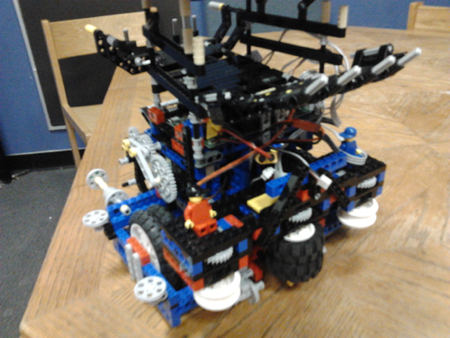
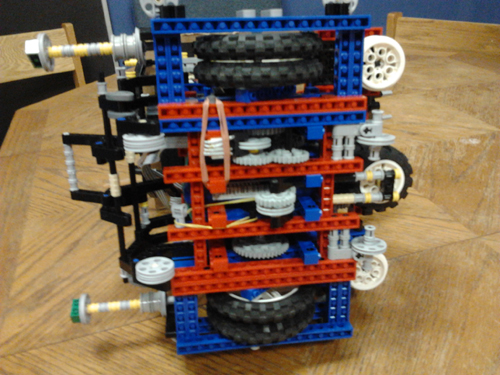
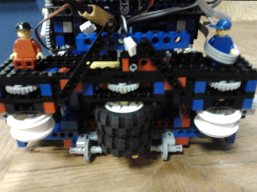
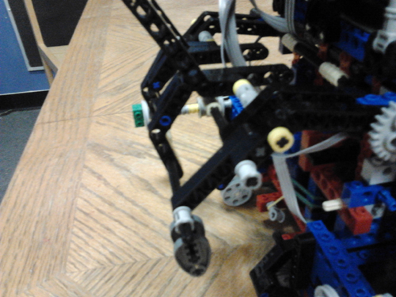
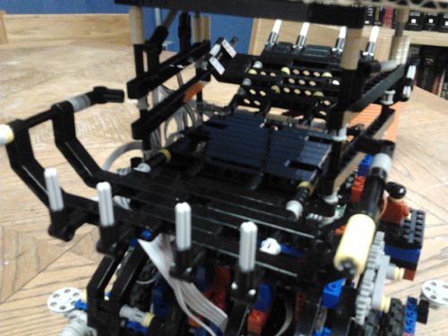
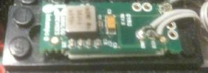

Hardware
Mechanical
Chassis
 Our chassis features two drive motors with vertical gearboxes. The sides of the robot have two large lego wheels attached to each drive axel. The front and back of the robot have pairs of stabilizing wheels.
The initial chassis design for Lego Digital Designer is available here.
In addition, the automatically-generated instructions for this chassis design are available here. (Because these are auto-generated instructions, they cannot be followed in a strictly linear fashion.)
Roller
Our roller mechanism is designed to spin the on-field rollers to capture territories. The mechanism uses a worm gear setup to spin three sections of wheels. Only the inner wheel has a rubber tire to prevent jamming on the edges of the territory capture spinners
Dispenser Arm
Our collector mechanism uses a servo-controller arm to actuate the dispenser levers on the field walls. The 180 degree servo was geared up to allow better movement speed and therefore quicker dispensing. One difficulty with the servo was determining its position (you can tell it to go to a specific position, but cannot easily poll whether it has arrived at that position), which was overcome with significant testing. The arm was also extended horizontally to allow a wider margin of error in positioning.
Hopper
The balls are dispensed into the hopper on top of the robot. The hopper is on a free pivot, but weighted to prevent undesired dumping. This allows the robot to store about 15 balls, and then dump them when desired. To simplify the construction, the dumping was accomplished by raising the dispensing arm to its maximum height, thereby raising the rear of the hopper. The hopper was generally very effective, but sometimes balls could get knocked out or would not dump properly. We combatted these problems by changing the design of the hopper numerous times to prevent balls falling out, and programming the servo to repeatedly bump the hopper when dumping, dislodging and scoring any “troublesome” balls.
Sensors
Gyro
The motors supplied in the competition kits have no speed control and are obviously not perfect motors, so our two drive motors reacted differently to increasing and decreasing power, making driving straight difficult. To help combat this, we used a gyroscopic sensor and designed a PID (proportional integral derivative) drive control system. That is a very complicated way of using the VPS (vision position system) to determine our goal, and then use the gyro to make sure we were driving there in the most efficient path, regardless of differences in motor power. This allowed us to drive straight or in perfect curves as needed, although driving straight then doing an in place turn was frequently easier and more effective.